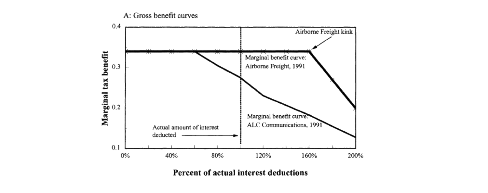
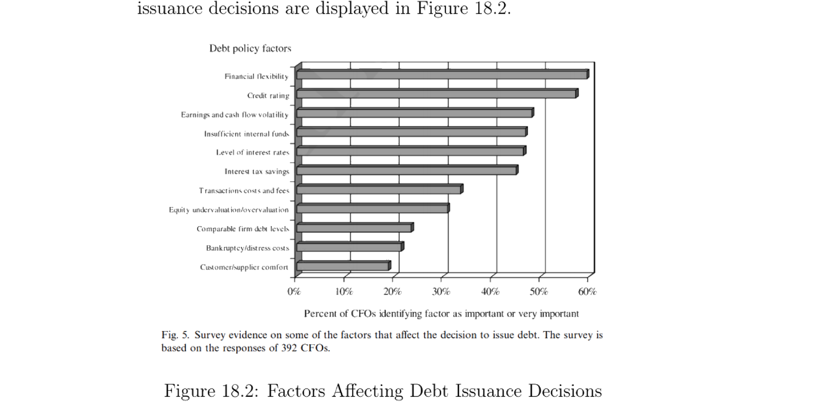
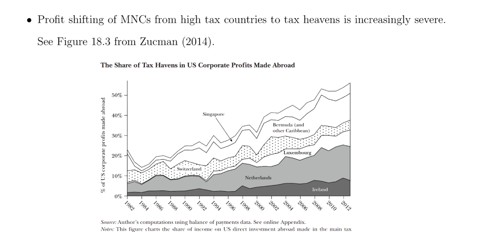
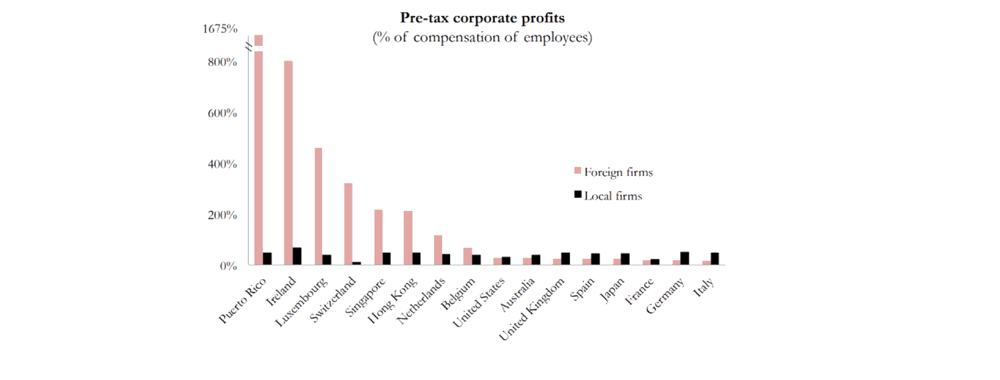
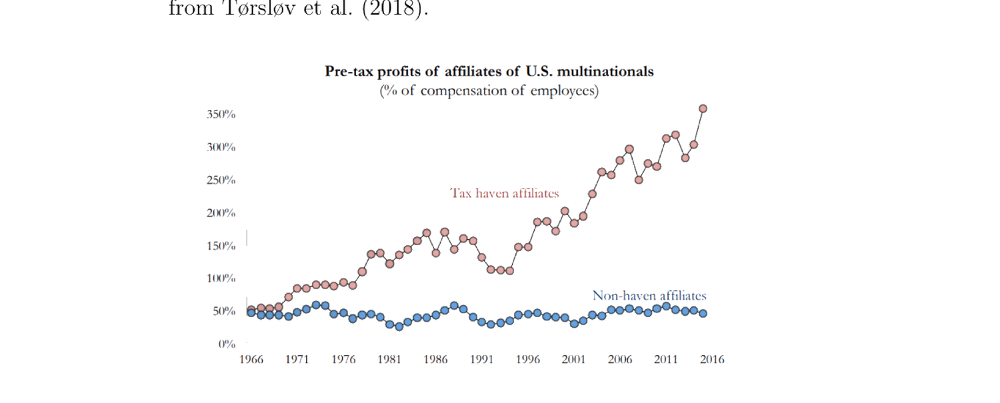

18. Capital Structure: Trade-Off Theory and Market Timing
本章主题：资本结构的实证——权衡理论与市场择时。 §18.1 债务的税收利益：Graham (2000) 用税函数的「拐点 (kink)」度量税盾（盈余随机游走 (18.1)、税盾 $=$ 利息 \(\times\tau_c\)），发现多数公司远在拐点左侧（保守用债）——若加到拐点平均可增值 15.7%；MacKie-Mason (1990) probit 证税亏结转 TLCF 使公司少用债。Panier et al. (2015) 用比利时 2006 股权补贴 DiD 干净识别：补贴使比利时公司股权占比上升。Desai et al. (2004)：跨国公司 (MNC) 子公司在金融市场欠发达国用更多（尤其内部）债，10% 更高税率对应 2.8% 更高负债率；Torslov et al. (2018)：40% MNC 利润每年转入避税天堂，税盾因利润转移而重要性下降——提示研究债务的其他好处。§18.2 债务导致的财务困境：财务困境效应识别受选择偏误困扰（(18.3) 偏误为负，因困境公司多有经济困境）；难点是把财务困境与经济困境分开。Altman (1984) 用 Z 分数分组（基于会计变量、不干净）；Andrade-Kaplan (1998) 用高杠杆交易 HLT（覆盖率低=财务困境、营业利润率高=无经济困境）估得困境成本约占公司价值 20%（上界）；Hortacsu et al. (2013) 用带保修耐用品（二手车 + CDS）；Brown-Matsa (2016) 用求职申请（仅供给侧），CDS 升 1000bp → 申请少 20%。三者都只识别「公司困境」非纯「财务困境」。§18.3 资本结构的另类理解：权衡理论被反例挑战（盈利公司反而少用债、杠杆随规模/固定资产增、随市值账面比/ROA 减）；替代解释为啄食顺序（Myers-Majluf 1984）与市场择时（Baker-Wurgler 2002：当前资本结构 = 过去择时尝试的累积结果，杠杆变动分解 (18.5) 显示市值账面比经股权发行渠道持久影响杠杆）。
Chapter theme: the empirics of capital structure — trade-off theory and market timing. §18.1 Tax benefit of debt: Graham (2000) measures the tax shield via the "kink" of the tax function (earnings a random walk (18.1), tax shield $=$ interest \(\times\tau_c\)), finding most firms far to the left of the kink (conservative debt use) — levering to the kink would add 15.7% value on average; MacKie-Mason (1990) probit shows tax-loss carryforwards (TLCF) make firms use less debt. Panier et al. (2015) cleanly identify via Belgium's 2006 equity subsidy (DiD): the subsidy raised Belgian firms' equity ratio. Desai et al. (2004): MNC subsidiaries use more (especially internal) debt in countries with underdeveloped financial markets, 10% higher tax rates ↔ 2.8% higher debt ratios; Torslov et al. (2018): 40% of MNC profits shift to tax havens yearly, so the tax shield is less important due to profit shifting — pointing to studying other benefits of debt. §18.2 Financial distress caused by debt: identifying the financial-distress effect suffers selection bias ((18.3) negative, since distressed firms often have economic distress); the challenge is separating financial from economic distress. Altman (1984) groups by Z-score (accounting-based, not clean); Andrade-Kaplan (1998) use highly leveraged transactions (HLTs) (low coverage = financial distress, high operating margin = no economic distress), estimating distress cost ~20% of firm value (an upper bound); Hortacsu et al. (2013) use durable goods with warranty (used cars + CDS); Brown-Matsa (2016) use job applications (supply side only), a 1000bp CDS rise → 20% fewer applicants. All three identify "corporate distress" not pure "financial distress." §18.3 Alternative understanding: trade-off theory is challenged by counterexamples (profitable firms use less debt; leverage rises in size/fixed assets, falls in market-to-book/ROA); alternatives are the pecking order (Myers-Majluf 1984) and market timing (Baker-Wurgler 2002: current capital structure = cumulative outcome of past timing attempts; the leverage-change decomposition (18.5) shows market-to-book affects leverage persistently through the equity-issuance channel).
18.1 Tax Benefit of Debt
如第 2 章所述，经典权衡理论说债务（更高杠杆）有利有弊。本节是债务税收利益的实证证据。
18.1.1 度量债务的税收利益：Graham (2000). Graham (2000) 通过定义公司税函数的拐点 (kink) 来度量税收利益，结论是多数公司远不及该拐点。
- 定义拐点：Graham (2000) 把公司收入过程建模为带漂移的随机游走
$$\Delta\text{EBIT}_{it}=\mu_i+\xi_{it},\quad \mu_i\ge0 \tag{18.1}$$
其中 \(\text{EBIT}_{it}\) 为公司 \(i\) 第 \(t\) 期的「息税前盈余」、接近营业收入；(18.1) 假设资本结构不影响经营过程（有 MM (1958) 味道）。税盾由下式决定：
$$\text{Operating Income}=\text{Revenue}-\text{COGS}-\text{SG\&A}-\text{Depreciation}$$
$$\text{Pre-tax Income}=\text{Operating Income}-\text{Interest Expense}$$
$$\text{Tax Shield}=\text{Interest Expense}\times\tau_c\quad(\text{if Pre-tax Income}>0)$$
\(\tau_c\) 为公司税率。当税前收入 \(\le0\) 时税盾经税亏结转实现，更复杂、通常边际上略小于税前收入 $>0$ 区域的常数边际税盾；税前收入 $>0$ 时每元利息的边际税盾就是 \(\tau_c\)。以「实际利息扣除百分比」为横轴、「边际税盾」为纵轴作图，税函数先平、过拐点后下倾（未来收入耗尽状态）——见图 18.1。到拐点的距离由当前利息支付（越高越近）、营业收入（越低越近）、收入波动（越高越近，因未来实现不确定）决定。

- 发现：多数公司远在拐点左侧 = 缺乏积极性；若都加杠杆到拐点，平均公司可增值 15.7%（用 (2.1) 个人税计算为 7.3%），仍惊人地大。
- 评论：此法只度量债务利益、不涉成本；成本不甚清楚（Graham-Harvey 2001 对 392 位 CFO 的调查给出影响发债决策的因素排序，见图 18.2）；只度量税收利益、不涉其他利益；只度量边际效应、可能漏掉影响第一元发债决策的重要因素。MacKie-Mason (1990) 用 probit（离散选择）证：接近或已税亏耗尽（有 TLCF）的公司更少用债融资。识别问题：实证证据常来自税率变动期，但税率变动常伴随税基变动，使估计复杂；Panier et al. (2015) 用比利时 2006 实验给出更干净的估计。

As discussed in Chapter 2, classical trade-off theory says there are benefits and costs of debt (higher leverage). This section is empirical evidence on the tax benefit of debt.
18.1.1 Measuring the tax benefit of debt: Graham (2000). Graham (2000) measures the tax benefit by defining the kink of a firm's tax function, concluding that most firms are not even close to that kink.
- Define the kink: Graham (2000) models the income process as a random walk with drift,
$$\Delta\text{EBIT}_{it}=\mu_i+\xi_{it},\quad \mu_i\ge0 \tag{18.1}$$
where \(\text{EBIT}_{it}\) is "earnings before interest and taxes" of firm \(i\) in period \(t\), close to operating income; (18.1) assumes capital structure doesn't affect the operating process (an MM (1958) flavor). The tax shield is determined by:
$$\text{Operating Income}=\text{Revenue}-\text{COGS}-\text{SG\&A}-\text{Depreciation}$$
$$\text{Pre-tax Income}=\text{Operating Income}-\text{Interest Expense}$$
$$\text{Tax Shield}=\text{Interest Expense}\times\tau_c\quad(\text{if Pre-tax Income}>0)$$
\(\tau_c\) is the corporate tax rate. When pre-tax income \(\le0\), the tax benefit is through tax-loss carryforwards, more complicated and generally marginally smaller than the constant marginal benefit in the pre-tax-income $>0$ region; for pre-tax income $>0$ the marginal benefit per dollar of interest is simply \(\tau_c\). Plotting "percent of actual interest deduction" (x) against "marginal tax benefit" (y), the tax function is flat then downward-sloped past a kink (future income-exhaustion states) — see Figure 18.1. The distance to the kink is determined by the current interest payment (higher → closer), operating income (lower → closer), and income volatility (higher → closer, due to uncertainty in future realization).
- Findings: most firms are far to the left of their kinks = lack of aggressiveness; levering to the kink would add 15.7% value for the average firm (7.3% computing DTS with personal taxes as in (2.1)), still surprisingly big.
- Comments: this only measures the benefit of debt, not its costs; costs are not well-known (Graham-Harvey 2001 survey 392 CFOs on factors affecting debt issuance, Figure 18.2); only tax benefit, not other benefits; only the marginal effect, possibly missing factors affecting the first-dollar decision. MacKie-Mason (1990) uses a probit (discrete choice) to show firms close to or already tax-exhausted (with TLCF) are less likely to finance with debt. Identification problem: evidence typically comes from phases of tax-rate changes, but those are accompanied by tax-base changes, complicating the estimate; Panier et al. (2015) gives cleaner estimates via the Belgium 2006 experiment.
18.1.2 Belgian Experiment: Panier et al. (2015)
2006 年比利时实施股权补贴：允许公司从应税收入中扣除 \(rE\)（\(r\) 为固定数、\(E\) 为权益账面值），无论股权派付政策如何。Panier et al. (2015) 利用此实验估计税收利益对融资的影响。
关键问题：(1) 比利时公司资本结构是否响应该政策？(2) 2006 前后杠杆变化是税收利益还是混淆因素？(3) 比利时公司响应是否有差异？(4) 若杠杆改变，倾向股权的公司用何种融资策略？
实证设计（DiD）：
$$E_{it}=\alpha+\beta\text{TREAT}_i+\gamma\text{POST}_t+\delta\,\text{TREAT}_i\times\text{POST}_t+\boldsymbol\psi\cdot\mathbf X_{it}+\phi_i+\eta_t+\xi_{it}+\varepsilon_{it}$$
\(E_{it}\)=权益资产比；\(\text{TREAT}_i=1\) 若比利时、\(0\) 若邻国；\(\text{POST}_t=1\) 若 2006 后；\(\mathbf X_{it}\) 控制；\(\phi_i\) 国家固定效应、\(\eta_t\) 时间固定效应、\(\xi_{it}\) 国家-时间固定效应。干净识别策略：国家 FE 处理两组处于不同行业；当期税结构变量控制并行税改；样本仅含比利时边境 100/250/500 公里内公司以保可比性；标准误按国家层聚类（依 (17.12)）。
结果：股权补贴 → 两年内比利时公司相对对照组的权益资产比上升；新公司与在位公司都提高权益比（在位公司 2006 后向权益再平衡、新公司 2006 后重依股权）；大公司与新公司响应更强；权益比上升来自新股权发行与权益绝对值上升，而非减少非权益负债或改变派付；效应对大型独立公司显著，不只限于 MNC 子公司。
In 2006 Belgium introduced an equity subsidy: firms could deduct \(rE\) from taxable income (\(r\) a fixed number, \(E\) the book value of equity), regardless of equity payout policy. Panier et al. (2015) exploit this to estimate the effect of the tax benefit on financing.
Key questions: (1) Did Belgian firms' capital structure respond? (2) Is the leverage change around 2006 the tax benefit or confounding? (3) Differences in Belgian firms' responses? (4) If leverage changes, what financing strategies do equity-tilting firms use?
Empirical design (DiD):
$$E_{it}=\alpha+\beta\text{TREAT}_i+\gamma\text{POST}_t+\delta\,\text{TREAT}_i\times\text{POST}_t+\boldsymbol\psi\cdot\mathbf X_{it}+\phi_i+\eta_t+\xi_{it}+\varepsilon_{it}$$
\(E_{it}\) = equity-to-asset ratio; \(\text{TREAT}_i=1\) if Belgium, \(0\) if a neighboring country; \(\text{POST}_t=1\) after 2006; \(\mathbf X_{it}\) controls; \(\phi_i\) country FE, \(\eta_t\) time FE, \(\xi_{it}\) country-time FE. Clean identification: country FE address the two groups being in different industries; a current tax-structure variable controls for concurrent tax reforms; the sample only includes firms within 100/250/500 km of the Belgian border for comparability; standard errors clustered at the country level (per (17.12)).
Results: the subsidy → higher equity-to-asset ratio of Belgian firms relative to controls within two years; both new and incumbent firms raise the ratio (incumbents rebalance toward equity after 2006, new firms rely heavily on equity after 2006); large and new firms respond more strongly; the higher ratio comes from new equity issuance and higher absolute equity, not from reducing non-equity liabilities or changing payout; the effect is strong for large standalone firms, not just MNC subsidiaries.
18.1.3 Profit-Shifting of Multinational Corporations: Desai et al. (2004) and Torslov et al. (2018)
为理解资本结构对税收激励的敏感性，研究跨国公司 (MNC) 行为。MNC 从高税国向避税天堂的利润转移日益严重（图 18.3，Zucman 2014）。两类利润转移：实体（有形资本/资产转移至外国，涉当地生产与就业）、非实体（无实际资本转移，仅经法律/财务程序虚拟转移利润，不涉当地生产就业）。

Desai et al. (2004)：MNC 子公司在金融市场欠发达的外国用更多债务、尤其来自内部资本市场。以 MNC 为「实验室」（单一 MNC 在不同税环境中干净体现地方税率对子公司资本结构的影响）：典型 MNC 中 10% 更高地方税率对应 2.8% 更高负债率；内部资本市场借贷（子公司间）对税敏感；外部融资对当地金融市场发展敏感（欠发达市场子公司更少外部债融资；IV 回归显示内部借贷替代了欠发达国子公司减少的外部借贷的 75%）。
Torslov et al. (2018)：除债务外有更多避税策略可用。从不同视角考察 MNC 利润转移，开启思考债务利益的新方式——如今公司有利润转移等策略避高税，故须更仔细思考债务除税盾外的其他利益（税盾如今重要性下降，是资本结构研究的新方向）。结果：每年 40% MNC 利润转入避税天堂；避税天堂国中外国子公司比当地公司更盈利，非避税天堂国中外国子公司比当地公司更不盈利（低税率带来的高资本回报驱动避税天堂外国公司的高盈利，图 18.4）；美国 MNC 的避税天堂子公司比非避税天堂子公司盈利高 5–7 倍（图 18.5）；高税国税务当局未能遏制 → 利润转移持续。


To understand the sensitivity of capital structure to tax incentives, we study MNC behaviors. MNC profit shifting from high-tax countries to tax havens is increasingly severe (Figure 18.3, Zucman 2014). Two types: physical (tangible capital/assets transferred abroad, involving local production and employment) and non-physical (no actual capital shifted, profits virtually shifted via legal/financial procedures, no local production/employment).
Desai et al. (2004): MNC subsidiaries use more debt, especially from the internal capital market, in foreign countries with underdeveloped financial markets. Using MNCs as "laboratories" (a single MNC in different tax environments cleanly illustrates the effect of local tax rates on subsidiary capital structure): a typical MNC has 10% higher local tax rates ↔ 2.8% higher debt/asset ratios; internal capital market borrowing (among subsidiaries) is sensitive to taxes; external financing is sensitive to local financial development (subsidiaries in underdeveloped markets less likely to use external debt; IV regression shows internal borrowing substitutes for 75% of reduced external borrowing of subsidiaries in underdeveloped countries).
Torslov et al. (2018): more tax-avoiding strategies are available beyond debt. Studying MNC profit shifting from a different perspective opens a new way of thinking about the benefits of debt — nowadays firms have strategies like profit shifting to avoid high taxes, so we must think more carefully about benefits of debt other than the tax shield (the tax shield is less important now, a new direction in capital structure research). Results: 40% of MNC profits shift to tax havens yearly; in tax-haven countries foreign subsidiaries are more profitable than local firms, while in non-tax-haven countries they are less profitable than local firms (high returns on capital from low tax rates drive the higher profitability of foreign firms in tax havens, Figure 18.4); for US MNCs, tax-haven subsidiaries are 5–7 times more profitable than non-tax-haven ones (Figure 18.5); high-tax tax authorities fail to combat this → persistence in profit shifting.
18.2 Financial Distress Caused by Debt
权衡理论说债务有成本 = 财务困境。本节为其实证证据。财务困境的二分：直接（律师费等破产程序成本）、间接（高杠杆经营之成本，即 §2.6 的债务积压与资产替代/风险转移；风险转移总在离均衡路径上、实证证据少，但引入合约/资本结构来防它仍重要）。
财务困境效应识别受 (17.1) 的选择偏误困扰，且偏误来自经济困境效应。记 \(J_i=1\) 公司受财务困境、\(J_i=0\) 不受，\(V_{1i}/V_{0i}\) 为有/无财务困境时公司价值。可直接捕捉的效应 \(\mathbb{E}[V_{1i}\mid J_i{=}1]-\mathbb{E}[V_{0i}\mid J_i{=}0]\) (18.2) 受偏误：
$$\mathbb{E}[V_{1i}\mid J_i{=}1]-\mathbb{E}[V_{0i}\mid J_i{=}0]=\underbrace{\mathbb{E}[V_{1i}\mid J_i{=}1]-\mathbb{E}[V_{0i}\mid J_i{=}1]}_{\kappa}+\underbrace{\mathbb{E}[V_{0i}\mid J_i{=}1]-\mathbb{E}[V_{0i}\mid J_i{=}0]}_{\text{selection bias}<0} \tag{18.3}$$
偏误为负（受困公司多有经济困境、反事实 \(V_{0i}\) 更低），故 (18.2) 高估了负效应。挑战：把财务困境与经济困境分开。Altman (1984) 用 Z 分数分组：对各 Z 组用回归 + 分析师预测估「破产前三年」的预期利润，再算实际 − 预期之差；低 Z 组（高破产概率）均值 \(0.98\)/股、高 Z 组 \(0.08\)/股，故高破产概率公司倾向表现差。但 Z 基于会计变量、也受经济困境影响，按 Z 分组不能把财务与经济困境分开（低 Z 公司可能即便 100% 股权也表现差），故 Altman (1984) 估计不干净。Z 分数（Altman 1968）：
$$Z=1.2A+1.4B+3.3C+0.6D+0.999E$$
\(A=\)营运资本/总资产，\(B=\)留存收益/总资产，\(C=\)息税前盈余/总资产，\(D=\)权益市值/总资产，\(E=\)总销售/总资产。
Trade-off theory says debt has costs = financial distress. This section gives empirical evidence. A dichotomy: direct (lawyer's fees and other bankruptcy-process costs) and indirect (costs of high leverage from operations, i.e. the debt overhang and asset substitution/risk shifting of §2.6; risk shifting is always on the off-equilibrium path with little empirical evidence, but introducing contracts/capital structure to prevent it is still important).
Identifying the financial-distress effect suffers the selection bias of (17.1), coming from the economic-distress effect. Let \(J_i=1\) if firm \(i\) suffers financial distress, \(J_i=0\) otherwise, with \(V_{1i}/V_{0i}\) the firm value with/without financial distress. The directly capturable effect \(\mathbb{E}[V_{1i}\mid J_i{=}1]-\mathbb{E}[V_{0i}\mid J_i{=}0]\) (18.2) suffers bias:
$$\mathbb{E}[V_{1i}\mid J_i{=}1]-\mathbb{E}[V_{0i}\mid J_i{=}0]=\underbrace{\mathbb{E}[V_{1i}\mid J_i{=}1]-\mathbb{E}[V_{0i}\mid J_i{=}1]}_{\kappa}+\underbrace{\mathbb{E}[V_{0i}\mid J_i{=}1]-\mathbb{E}[V_{0i}\mid J_i{=}0]}_{\text{selection bias}<0} \tag{18.3}$$
The bias is negative (distressed firms often have economic troubles, lower counterfactual \(V_{0i}\)), so (18.2) overestimates the negative effect. Challenge: separate financial from economic distress. Altman (1984) groups by Z-score: for each Z group, estimate expected profits (regression + analyst forecasts) using data three years before bankruptcy, then compute actual − expected; the low-Z group (high bankruptcy probability) averages \(0.98\)/share vs \(0.08\)/share for the high-Z group, so high-bankruptcy-probability firms tend to underperform. But Z is accounting-based and also subject to economic distress; grouping by Z doesn't tease out financial from economic distress (low-Z firms may underperform even at 100% equity), so Altman's (1984) estimates are not clean. The Z-score (Altman 1968):
$$Z=1.2A+1.4B+3.3C+0.6D+0.999E$$
\(A=\) working capital/total assets, \(B=\) retained earnings/total assets, \(C=\) EBIT/total assets, \(D=\) equity's market value/total assets, \(E=\) total sales/total assets.
18.2.1 Indirect Financial Distress from Highly Leveraged Transactions: Andrade and Kaplan (1998)
用高杠杆交易 (HLT) 数据把财务困境从经济困境中隔离出来，再估财务困境对业绩的影响。
数据：136 笔 HLT（杠杆收购 LBO 与管理层收购 MBO）；聚焦其中 31 家陷财务困境并违约的公司。分离财务与经济困境：这 31 家高杠杆、严重财务困境——平均覆盖率 \(\text{EBITDA}/\text{Interest}=0.97\)，远低于行业中位 4，几乎无法用经营收入支付利息，违约风险高；但被认定未陷经济困境（识别的关键假设）——平均营业利润率 \(\text{EBITDA}/\text{Sales}=9.8\%\)，良好且高于行业中位，盈利性佳。故作者断言后续业绩之效应全归财务困境。
两类分析：(1) HLT 的整体效应：从 HLT 前到困境解决后的价值变化，行业调整均值回报 12%、中位 4%，市场调整均值 8%、中位 5%——HLT 整体创造正价值。(2) 财务困境的效应：从「困境前一年末」（困境时价值）到「困境解决后」（解决时价值）的价值变化。困境时价值（HLT 当时未公开交易/被收购）估为
$$\text{cash}+\big(\text{industry median multiple of }\tfrac{\text{Total Capital}}{\text{EBITDA}}\big)\times\text{EBITDA of HLTs}$$
解决时价值（多数重新公开交易，剔除例外后稳健，含期间对资本的支付）。中位估计：财务困境成本对 31 家为行业调整 20.7%、市场调整 24.7%；均值估计：行业调整 9.7%、市场调整 9.8%。
结果的挑战：虽比 Altman (1984) 量级小，仍可能高估（经济困境或不在困境前一年末显现，故其贡献被低估）；私募在 LBO 后可能低效削成本以抬价高位卖出，长期跌价——「财务困境效应」部分由此等损害行为致、与资本结构无关；数据含市场繁荣-萧条周期、部分解释涨跌，未剔除使估计不准。综上，此为财务困境效应的上界，至多约占公司价值 20%。
Use highly leveraged transaction (HLT) data to isolate financial from economic distress, then estimate the effect of financial distress on performance.
Data: 136 HLTs (LBOs and MBOs); focus on the 31 that faced financial distress and defaulted. Separating financial from economic distress: these 31 are highly leveraged with severe financial distress — average coverage \(\text{EBITDA}/\text{Interest Expense}=0.97\), much lower than the industry median of 4, can hardly pay interest from operations, high default risk; but claimed not economically distressed (the crucial assumption) — average operating margin \(\text{EBITDA}/\text{Sales}=9.8\%\), good and above the industry median. So the authors attribute the subsequent performance effect entirely to financial distress.
Two analyses: (1) Overall HLT effect: value change from pre-HLT to post-distress-resolution, industry-adjusted mean return 12% (median 4%), market-adjusted mean 8% (median 5%) — HLTs create overall positive value. (2) Financial-distress effect: value change from the end of the year before distress (value at distress) to post-distress-resolution (value at resolution). The value at distress (HLTs not publicly traded then / bought out) is estimated as
$$\text{cash}+\big(\text{industry median multiple of }\tfrac{\text{Total Capital}}{\text{EBITDA}}\big)\times\text{EBITDA of HLTs}$$
and the value at resolution (mostly publicly traded again, robust excluding exceptions, interim payments to capital included). Median estimates: financial distress cost 20.7% industry-adjusted, 24.7% market-adjusted; mean estimates 9.7% and 9.8%.
Challenges: though smaller in magnitude than Altman (1984), it could still be overestimated (economic distress may not show up at the end of the year before distress, underestimating its contribution); PE firms in an LBO may inefficiently cut costs to push up the price to sell high, leading to long-term decline — the "financial distress effect" partly caused by such detrimental behaviors, nothing to do with capital structure; the data spans a boom-bust cycle, partly explaining the price changes, biasing the estimate. So this places an upper bound on the financial-distress effect, at most ~20% of firm value.
18.2.2 Hortacsu et al. (2013) & 18.2.3 Brown and Matsa (2016)
Hortacsu et al. (2013)（带保修的耐用品）：逻辑——耐用品生产商陷财务困境 → 潜在消费者担心保修无法兑现 → 停买 → 后续业绩差（消费者信心缺失所致）。数据：二手车批发拍卖 + 厂商 CDS（信用违约掉期，CDS 价差越高违约概率越高）。规范：
$$p_{ijklt}=\beta\,\text{CDS}_{it}+\gamma\,Z_{ijklt}+\delta\,(\text{CDS}_{it}\times Z_{ijklt})+\boldsymbol\Gamma\cdot\mathbf X_{ijklt}+\alpha_{ijkT}+\varepsilon_{ijklt} \tag{18.4}$$
\(i\)=厂商、\(j\)=车型、\(k\)=拍卖地区（美国 8 区）、\(l\)=具体拍卖、\(t\)=交易日、\(T\)=周；\(p\)=拍卖成交价、\(\text{CDS}_{it}\)=厂商 CDS 价差、\(Z\)=车特定的未来服务流度量（保修指示、里程分位、车况）、\(\alpha_{ijkT}\)=车-地区-周固定效应。用日度高频变异隔离财务困境的即时效应、用交互项 \(\text{CDS}\times Z\) 隔离经由保修的效应、用控制饱和。结果：CDS 价差升 1 个基点 → 二手车拍卖价跌 6.8 美分，对预期寿命更长的车效应更强，稳健。挑战：未能排除经济困境（CDS 升不仅因财务困境），故估计的是「公司困境对耐用品价格的影响」而非「财务困境」。
Brown and Matsa (2016)（对求职者的吸引力）：直觉——求职者愿以更低工资为非困境公司工作（隐含失业保险，不易因破产被裁）；困境公司须给工资溢价才能吸引年轻人才。识别难点：须把对求职者吸引力的下降分解为供给侧（申请者更不愿投困境公司）与需求侧（困境公司或缩规模、减劳动需求）；用就业/工资数据无法分离（二者都受供需影响）。策略：用每个空缺职位的求职申请数据（仅供给侧，需求侧固定）；聚焦 78 家金融服务公司 2008.4–2009.12（波动月份提供变异）；线上求职平台专有数据（招聘 + 申请者）。规范：
$$N_{itsj}=\alpha+\beta\,\text{CDS}_{it}+\phi_{itsj}+\varepsilon_{itsj}$$
\(i\)=公司、\(t\)=月、\(s\)=州、\(j\)=职位；\(N\)=申请数（或对数）、\(\text{CDS}_{it}\)=公司 CDS 价格分位（或 CDS 本身）、\(\phi_{itsj}=\{\phi_i,\phi_t,\phi_s,\phi_j,\phi_{itsj}\}\) 细致固定效应。结果：困境时公司吸引的申请者显著减少，CDS 价升 1000 个基点 → 每职位申请少 20%；需求侧被排除（无证据表明招聘改变目标对象或降工资）。挑战：CDS 度量违约概率（好的「公司困境」度量、未必「财务困境」），故度量的是「公司困境」对吸引力的影响。
Hortacsu et al. (2013) (durable goods with warranty): logic — a durable-goods producer in financial distress → consumers worry the warranty won't be honored → stop buying → poor later performance (from lost consumer confidence). Data: used cars at wholesale auctions + manufacturer CDS (credit default swap; higher CDS spread → higher default probability). Specification:
$$p_{ijklt}=\beta\,\text{CDS}_{it}+\gamma\,Z_{ijklt}+\delta\,(\text{CDS}_{it}\times Z_{ijklt})+\boldsymbol\Gamma\cdot\mathbf X_{ijklt}+\alpha_{ijkT}+\varepsilon_{ijklt} \tag{18.4}$$
\(i\)=manufacturer, \(j\)=car model, \(k\)=auction region (8 US regions), \(l\)=specific auction, \(t\)=transaction day, \(T\)=week; \(p\)=auction price, \(\text{CDS}_{it}\)=manufacturer CDS spread, \(Z\)=car-specific measure of future service flows (warranty indicator, mileage quantile, condition), \(\alpha_{ijkT}\)=car-region-week FE. Use daily high-frequency variation to isolate the immediate effect, the interaction \(\text{CDS}\times Z\) to isolate the warranty channel, and saturate with controls. Results: a 1 bp rise in CDS spread → a 6.8 cent drop in used-car auction prices, stronger for cars with longer expected service life, robust. Challenge: doesn't rule out economic distress (CDS rises not only from financial distress), so it estimates "the effect of corporate distress on durable-good prices," not "financial distress."
Brown and Matsa (2016) (attractiveness to job applicants): intuition — candidates work at a non-distressed firm for a lower wage (implicit unemployment insurance, less likely fired from bankruptcy); a distressed firm needs a wage premium to attract young talent. Identification difficulty: separate the loss of attractiveness into supply side (applicants less attracted) and demand side (distressed firms may shrink scale and labor demand); employment/wage data cannot separate them (both affected by both). Strategy: use job-application data for each open position (supply side only, demand fixed); focus on 78 financial-service firms April 2008–Dec 2009 (volatile months provide variation); proprietary online-platform data (postings + applicants). Specification:
$$N_{itsj}=\alpha+\beta\,\text{CDS}_{it}+\phi_{itsj}+\varepsilon_{itsj}$$
\(i\)=firm, \(t\)=month, \(s\)=state, \(j\)=job title; \(N\)=number (or log) of applications, \(\text{CDS}_{it}\)=quantile indicators of CDS price (or CDS itself), \(\phi_{itsj}=\{\phi_i,\phi_t,\phi_s,\phi_j,\phi_{itsj}\}\) detailed FE. Results: firms attract significantly fewer applicants when distressed, a 1000 bp CDS rise → 20% fewer applicants per position; demand side ruled out (no evidence postings change target recipients or reduce posted wage). Challenge: CDS measures default probability (a good "corporate distress" measure, not necessarily "financial distress"), so it measures how "corporate distress" affects attractiveness.
18.3 Alternative Understanding of Capital Structure
18.3.1 反对权衡理论的证据. Graham (2000) 发现「大型、流动性高、盈利、预期困境成本低的公司却保守用债」，与权衡理论相悖（此类公司本应积极用债）。Rajan-Zingales (1995) 发现静态权衡理论无法解释的相关性：杠杆随规模增、随固定资产增、随市值账面比与 ROA 减。故替代解释登场：(1) 啄食顺序理论（Myers-Majluf 1984，§4.2）——信息不对称下公司偏好用债以示好质量，融资有层级（内部资金→债务→股权），可调和「盈利公司流动性高反而少发债」的反常；(2) 市场择时。
18.3.2 当前资本结构 = 过去择时尝试的累积：Baker and Wurgler (2002). 经理择时市场——当股价相对账面值与过去市值高时发股；这一做法意在利用股权成本相对其他资本形式的暂时性波动；故公司当前资本结构是过去择时股权市场尝试的累积结果。数据：1968–1999 全部 COMPUSTAT 公司。支持证据——分解杠杆变动：
$$\frac{D_t}{A_t}-\frac{D_{t-1}}{A_{t-1}}=-\underbrace{\frac{e_t}{A_t}}_{\text{Part 1}}-\underbrace{\frac{R_t}{A_t}}_{\text{Part 2}}-\underbrace{E_{t-1}\!\left(\frac1{A_t}-\frac1{A_{t-1}}\right)}_{\text{Part 3}} \tag{18.5}$$
\(D\)=债务、\(A\)=资产、\(E\)=权益、\(e_t\)=新发权益、\(R_t\)=留存收益（均第 \(t\) 期）；Part 1=股权发行渠道、Part 2=留存收益渠道、Part 3=残差渠道。把三部分各自对市值账面比（及其他变量）回归，发现：更高市值账面比→更高股权发行；留存收益不受市值账面比显著影响；资产增长与市值账面比正相关（故更高市值账面比→更负的 \(\frac1{A_t}-\frac1{A_{t-1}}\)、由 (18.5) 更高杠杆）——确立市值账面比经股权发行渠道影响杠杆。还记录市值账面比的波动对杠杆有持久效应（过去市值账面比即便控制近期值仍显著影响当前杠杆）。结论：拟合权衡、啄食顺序、市场择时后，市场择时是解释「市值账面比对杠杆持久效应」最合理的理论。但被若干非行为派后续论文质疑——市场择时仍可由动态权衡理论（Hennessy-Whited 2005，§2.6.5）生成 Baker-Wurgler 记录的负相关。
18.3.1 Evidence against trade-off theory. Graham (2000) finds "large, liquid, profitable firms with low expected distress costs use debt conservatively," against trade-off theory (such firms should use debt aggressively). Rajan-Zingales (1995) find correlations the static trade-off theory can't justify: leverage rises in size, rises in fixed assets, falls in market-to-book and ROA. So alternatives arise: (1) the pecking order theory (Myers-Majluf 1984, §4.2) — under information asymmetry firms prefer debt to signal good quality, with a financing hierarchy (internal funds → debt → equity), reconciling the anomaly that profitable, liquid firms issue less debt; (2) market timing.
18.3.2 Current capital structure as a cumulative outcome of past timing: Baker and Wurgler (2002). Managers time the market — issue stock when the price is high relative to book and past market value; this aims to exploit temporary fluctuations in the cost of equity relative to other capital; so a firm's current capital structure is the cumulative outcome of past attempts to time the equity market. Data: all COMPUSTAT firms 1968–1999. Supporting evidence — decompose the leverage change:
$$\frac{D_t}{A_t}-\frac{D_{t-1}}{A_{t-1}}=-\underbrace{\frac{e_t}{A_t}}_{\text{Part 1}}-\underbrace{\frac{R_t}{A_t}}_{\text{Part 2}}-\underbrace{E_{t-1}\!\left(\frac1{A_t}-\frac1{A_{t-1}}\right)}_{\text{Part 3}} \tag{18.5}$$
\(D\)=debt, \(A\)=asset, \(E\)=equity, \(e_t\)=newly issued equity, \(R_t\)=retained earnings (all period \(t\)); Part 1 = equity-issuance channel, Part 2 = retained-earnings channel, Part 3 = residual channel. Regressing each part on market-to-book (and other variables): higher market-to-book → higher equity issue; retained earnings not significantly affected; asset growth positively related to market-to-book (so higher market-to-book → more negative \(\frac1{A_t}-\frac1{A_{t-1}}\) → higher leverage per (18.5)) — establishing that market-to-book affects leverage through equity issuance. They also document that market-to-book fluctuations have persistent effects on leverage (past market-to-book significantly affects current leverage even controlling for recent values). Conclusion: after fitting trade-off, pecking order, and market timing, market timing is the most reasonable theory for the persistent effect of market-to-book on leverage. But this is contested by non-behavioral follow-ups — market timing can still be generated by the dynamic trade-off theory (Hennessy-Whited 2005, §2.6.5) producing the negative correlations Baker-Wurgler document.
References
- Altman, E. I. (1968). Financial ratios, discriminant analysis and the prediction of corporate bankruptcy. The Journal of Finance 23(4), 589–609.
- Altman, E. I. (1984). A further empirical investigation of the bankruptcy cost question. The Journal of Finance 39(4), 1067–1089.
- Andrade, G. and S. N. Kaplan (1998). How costly is financial (not economic) distress? Evidence from highly leveraged transactions that became distressed. The Journal of Finance 53(5), 1443–1493.
- Baker, M. and J. Wurgler (2002). Market timing and capital structure. The Journal of Finance 57(1), 1–32.
- Brown, J. and D. A. Matsa (2016). Boarding a sinking ship? An investigation of job applications to distressed firms. The Journal of Finance 71(2), 507–550.
- Desai, M. A., C. F. Foley, and J. R. Hines Jr (2004). A multinational perspective on capital structure choice and internal capital markets. The Journal of Finance 59(6), 2451–2487.
- Graham, J. R. (2000). How big are the tax benefits of debt? The Journal of Finance 55(5), 1901–1941.
- Graham, J. R. and C. R. Harvey (2001). The theory and practice of corporate finance: Evidence from the field. Journal of Financial Economics 60(2-3), 187–243.
- Hennessy, C. A. and T. M. Whited (2005). Debt dynamics. The Journal of Finance 60(3), 1129–1165.
- Hortaçsu, A., G. Matvos, C. Syverson, and S. Venkataraman (2013). Indirect costs of financial distress in durable goods industries: The case of auto manufacturers. The Review of Financial Studies 26(5), 1248–1290.
- MacKie-Mason, J. K. (1990). Do taxes affect corporate financing decisions? The Journal of Finance 45(5), 1471–1493.
- Modigliani, F. and M. H. Miller (1958). The cost of capital, corporation finance and the theory of investment. The American Economic Review 1, 3.
- Myers, S. C. and N. S. Majluf (1984). Corporate financing and investment decisions when firms have information that investors do not have. Journal of Financial Economics 13(2), 187–221.
- Panier, F., F. Pérez-González, and P. Villanueva (2015). Capital structure and taxes: What happens when you (also) subsidize equity? Unpublished Manuscript, Stanford University.
- Rajan, R. G. and L. Zingales (1995). What do we know about capital structure? Some evidence from international data. The Journal of Finance 50(5), 1421–1460.
- Torslov, T. R., L. S. Wier, and G. Zucman (2018). The missing profits of nations. NBER Technical report.
- Zucman, G. (2014). Taxing across borders: Tracking personal wealth and corporate profits. Journal of Economic Perspectives 28(4), 121–48.